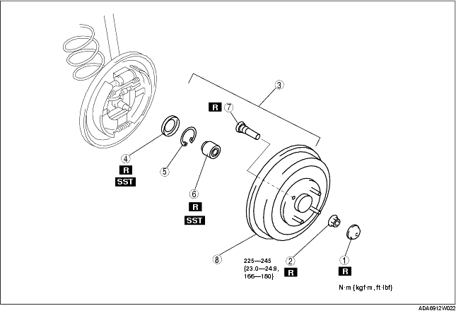
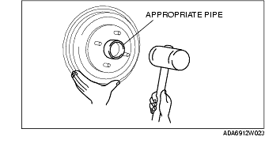

Brake drum replacement
1. Remove in the order indicated in the table.
2. Install in the reverse order of removal.
3. After installation, adjust the parking brake, and inspect the following.
- • If there is any malfunction, adjust the necessary part.
- (1) Depress the brake pedal a few times, then verify that the brakes do not drag.
- (2) Inspect the pedal-to-floor clearance.
- (3) Inspect the parking brake lever stroke.
- • The securing part of the parking brake cable could be damaged if the parking brake lever is pulled when the brake drum is removed. Always operate the parking brake lever only when the brake drum is installed.
- • If the clearance between the brake drum and shoes is excessively large, the auto-adjusting function may not function properly. When the brake drum and shoes are removed, verify the clearance and adjust if necessary by rotating the adjust screw using a flathead screwdriver. (See BRAKE SHOE CLEARANCE ADJUSTMENT)

Brake Drum Component Installation Note
- • Do not use a lot of force when installing the brake drum component to the hub spindle, since the wheel bearing could be damaged.
1. Lightly tap near the center of the brake drum assembly, and while centering the bearing, gradually install the brake drum assembly to the hub spindle.
